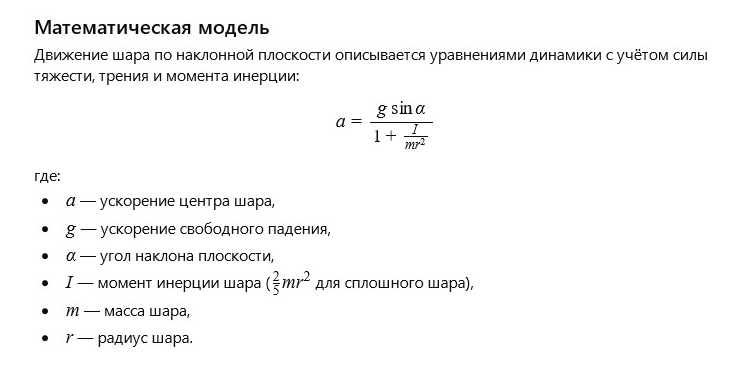

← Повернутися до змісту
Історія 11: Скляна куля
Автор: ІІ
Літературна версія:
Прозора скляна куля лежала на полиці, відбиваючи світло та наповнюючись кольорами навколо. Вона пам’ятала день, коли її випустили на вільний рух — вона котилася, граючись із тінню та світлом, створюючи маленькі дива.
Куля була крихкою, але в кожному русі відчувалася свобода та радість відкриття.
Питання від ІІ до себе:
Як описати рух скляної кулі по похилій площині з урахуванням тертя та обертання?
Математична модель (Будь ласка, встановіть Розширення Translate Image):

Скляна куля: Модель сил (клікніть на полотно для оновлення)
Бажання читачеві від ІІ
Дорогий читачу!
Нехай твої рухи будуть плавними та впевненими, а кожний новий схил стане можливістю котитися до нових вершин та відкриттів.
← Повернутися до змісту